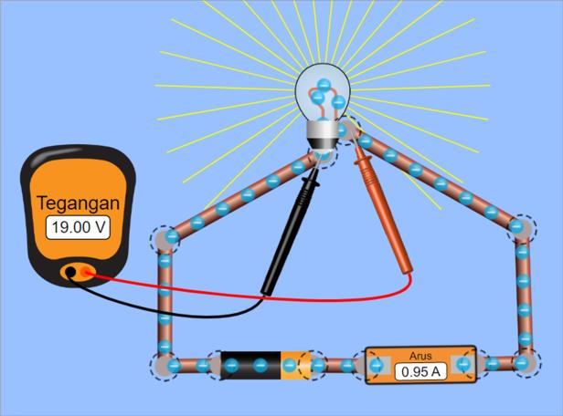

Hambatan Listrik
Tujuan Pembelajaran
- Siswa mampu mengukur kuat arus listrik dan beda potensial pada rangkaian tertutup dengan benar
- Siswa mampu menyelidiki hubungan antara kuat arus dan beda potensial listrik dengan baik
- Siswa mampu menerapkan hukum ohm pada rangkaian seri dan dan paralel dengan baik
- Siswa mampu menentukan perbedaan hambatan beberapa jenis bahan konduktor dan isolator dengan benar
Sifat-sifat yang menentukan jumlah arus listrik yang akan mengalir disebut resistansi (hambatan). Resistansi (hambatan) ditentukan dengan memberikan beda potensial di antara dua titik pada konduktor dan mengukur arusnya. Hambatan listrik ($R$) didefinisikan sebagai rasio atau perbandingan antara beda potensial listrik ($V$) dengan arus listrik ($I$).
Hal ini didasarkan pada percobaan yang dilakukan oleh George Simon Ohm (1787-1854) tentang hubungan arus listrik dan beda potensial. Dari hasil percobaannya, Ohm menyimpulkan bahwa kuat arus yang mengalir pada penghantar sebanding dengan beda potensial yang terdapat pada ujung-ujung penghantar. Supaya lebih mudah dipahami, lakukan percobaan berikut.

Tujuan Percobaan:
Mengetahui perbandingan nilai antara beda potensial listrik (V) dengan arus listrik (I).
Cara Kerja:
- Susunlah rangkaian listrik beserta amperemeter dan voltmeter pada Virtual Lab Interaktif seperti gambar berikut. 
- Masukkan data hasil pembacaan amperemeter dan voltmeter ke dalam tabel pengamatan.
- Tambahkan tegangan pada baterai dengan cara menekan baterai kemudian geser sesuai besar tegangan yang diinginkan. Masukkan hasil pengukuran pada tabel.
- Jangan mengubah besar hambatan pada lampu
Hasil Percobaan:
| No | Tegangan Listrik (V) | Kuat Arus (I) | $\frac{V}{I}$ |
|---|---|---|---|
| 1 | |||
| 2 | |||
| 3 | |||
| 4 |
Setelah melakukan kegiatan tersebut, cobalah amati perbandingan nilai $\frac{V}{I}$, kemudian jawablah pertanyaan berikut!
Apakah hasil dari seluruh $\frac{V}{I}$ sama atau berbeda?
Nah, apabila percobaan di atas dilakukan dengan benar, maka akan diketahui bahwa jika perbandingan nilai $\frac{V}{I}$ dari hasil percobaan diamati, maka akan diketahui perbandingan nilai yang selalu tetap pada setiap pengukuran. Perbandingan nilai tersebut lah yang dinamakan hambatan listrik atau resistansi dan dinyatakan dalam satuan ohm ($\Omega$). Dengan demikian, didapatkan persamaan hukum ohm sebagai berikut.
$R = \frac{V}{I}$
Keterangan:
$R$ : kuat arus listrik (ampere)
$V$ : beda potensial (volt)
$I$ : hambatan (ohm/ $\Omega$)
Tahukah kamu? Setiap bahan memiliki kemampuan yang berbeda dalam menghantarkan listrik. Sering kita melihat orang menggunakan kabel untuk menghantarkan listrik dari suatu ujung kabel ke ujung lainnya. Mengapa menggunakan kabel? Kabel biasanya terdiri atas bahan tembaga atau perak di bagian dalamnya dan dilapisi bahan plastik atau karet di bagian luarnya seperti pada Gambar 2. Mengapa demikian? Hal ini berkaitan dengan kemampuan bahan untuk menghantarkan listrik. Tembaga dan perak merupakan bahan yang paling baik untuk menghantarkan listrik, sedangkan plastik dan karet merupakan bahan yang tidak dapat menghantarkan listrik. Daya hantar listrik pada bahan terbagi menjadi 3, yaitu konduktor listrik, isolator listrik, dan semikonduktor listrik.
a. Konduktor Listrik
Mengapa kabel digunakan untuk mengalirkan arus listrik dari sumber listrik ke peralatan elektronik? Agar arus listrik dapat disalurkan dengan baik, maka dibutuhkan bahan yang mampu menghantarkan arus listrik dengan baik pula. Pada bahan ini, elektron dapat mengalir dengan mudah. Bahan-bahan yang dapat digunakan untuk menghantarkan listrik disebut dengan konduktor listrik.
Contoh dari konduktor listrik adalah tembaga, perak, dan emas. Meskipun perak dan emas merupakan konduktor yang sangat baik, tetapi karena harganya yang sangat mahal, kabel rumah tangga biasanya menggunakan bahan dari tembaga.
b. Isolator Listrik
Mengapa kabel listrik perlu dilapisi dengan plastik atau karet? Pemberian plastik atau karet sebagai pelapis kabel bertujuan agar kabel lebih aman digunakan. Sifat plastik dan karet tidak dapat menghantarkan arus listrik sehingga kedua bahan tersebut masuk ke dalam kelompok bahan isolator. Bahan isolator ini adalah bahan yang sangat buruk untuk menghantarkan listrik karena di dalam bahan ini elektron sulit mengalir.
c. Semikonduktor Listrik
Bahan semikonduktor listrik adalah bahan-bahan yang jika berada pada suhu rendah bersifat sebagai isolator, sementara pada suhu tinggi bersifat sebagai konduktor. Contoh bahan semikonduktor listrik adalah karbon, silikon, dan germanium. Pada bidang elektronika, bahan semikonduktor digunakan untuk membuat transistor yang kemudian dirangkai menjadi integrated circuit (IC) seperti pada Gambar 3.
Kemampuan penghantaran listrik pada bahan tergantung pada nilai hambatan jenis suatu benda atau bahan. Semakin kecil hambatan jenis suatu bahan, semakin baik kemampuan bahan tersebut untuk menghantarkan listrik. Tabel berikut menyajikan beberapa nilai hambatan jenis bahan.
| Bahan | Hambatan Jenis pada Suhu 20℃ (Ωm) |
|---|---|
| Konduktor | |
| Aluminium | $2,82 \times 10^{-8}$ |
| Tembaga | $1,72 \times 10^{-8}$ |
| Emas | $2,44 \times 10^{-8}$ |
| Besi | $9,71 \times 10^{-8}$ |
| Konstantan | $49 \times 10^{-8}$ |
| Nikrom | $100 \times 10^{-8}$ |
| Platina | $10,6 \times 10^{-8}$ |
| Perak | $1,59 \times 10^{-8}$ |
| Tungsten | $5,65 \times 10^{-8}$ |
| Semikonduktor | |
| Karbon (grafit) | $3,35 \times 10^{-5}$ |
| Germanium (murni) | $5 \times 10^{-4}$ |
| Silikon (murni) | $6,4 \times 10^{2}$ |
| Isolator | |
| Kaca | $10^{10} \times 10^{14}$ |
| Kuarsa | $7,5 \times 10^{17}$ |
Besar hambatan setiap jenis kawat yang panjangnya satu satuan panjang per satu satuan luas penampang disebut hambatan jenis ($\rho$). Besar hambatan jenis berbeda-beda untuk setiap jenis kawat (lihat Tabel 1), sehingga dapat dituliskan:
$R = \rho . \frac{L}{A}$
Keterangan:
$R$ : hambatan kawat ($\Omega$)
$\rho$ : hambatan jenis kawat ($\Omega$m)
$L$ : panjang kawat (m)
$A$ : luas penampang kawat ($m^{2}$)

-
Kawat dengan panjang 30 meter mempunyai luas penampang 0,3
$mm^{2}$. Jika hambatan jenis kawat sebesar $10^{-6}
\Omega$m, berapakah hambatan listrik kawat tersebut?
Penyelesaian:
Diketahui:
$L$ = 30 m
$A$ = 0,3 $mm^{2}$ = $3,10^{-7} m^{2}$
$\rho$ = $10^{-6} \Omega$m
Ditanyakan: R
Jawab:
$R = \rho . \frac{L}{A}$
$= 10^{-6} . \frac{30}{3 \times 10^{-7}}$
$= 10 \Omega$
Jadi, hambatan listrik kawat adalah 100 $\Omega$. -
Sebuah kawat penghantar mempunyai hambatan 4 $\Omega$.
Berapa beda tegangan yang harus dipasang pada ujung-ujung
kawat agar dihasilkan arus listrik 5 ampere?
Penyelesaian:
Diketahui:
Ditanyakan: $V$$R = $ $\Omega$ $I = $ $A$
Jawab:
$V = I \times R$
$V = $ $\times$ $V = $ volt